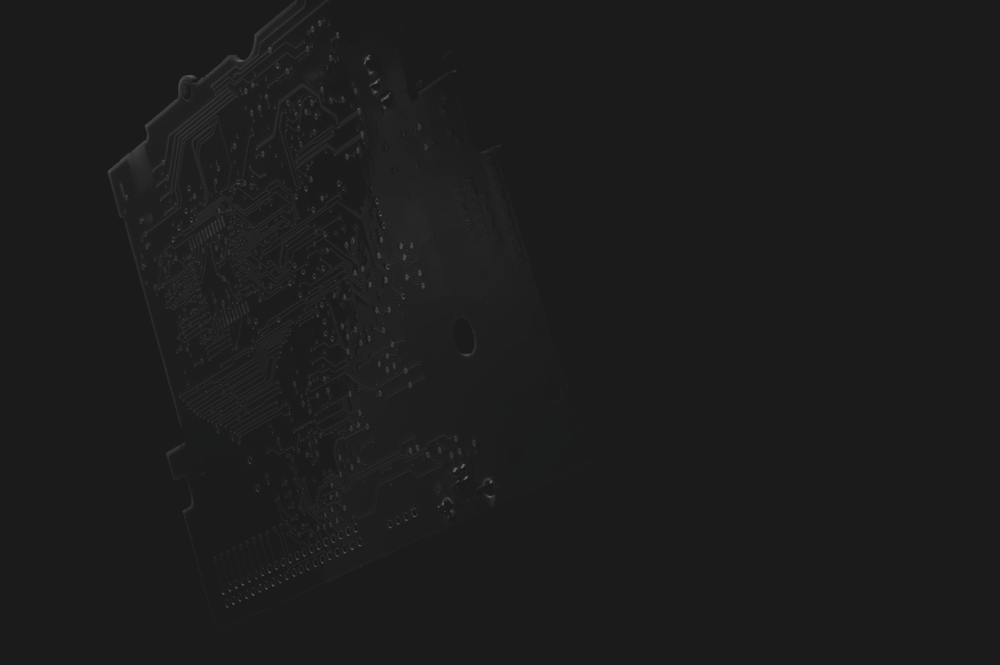
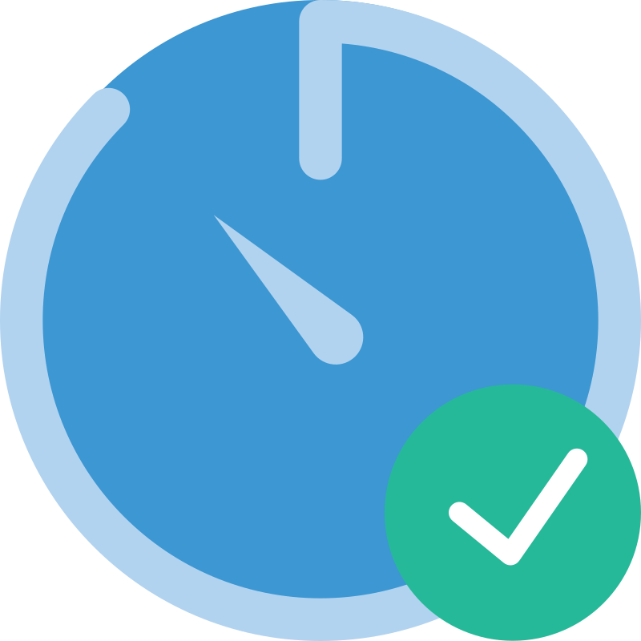
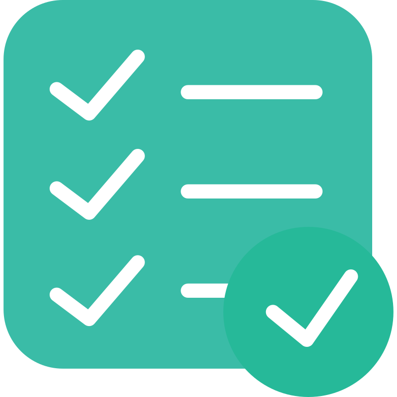

Oprava a predaj elektroniky.
Inštalácia softvéru a údržba počítačov.
Programovanie pamätí a mikroprocesorov.
Podrobnostiexpand_more
Váš spoľahlivý a férový servis so skúsenosťami od roku 1994.

Rýchlosť
Naša prevádzka je profesionálne vybavená pre efektívne a rýchle opravy.

Skúsenosť
Máme za sebou tisícky opráv od začiatku svojho pôsobenia.
Eset Bronze Partner
Sme súčasťou partnerského programu spoločnosti Eset pre predaj jej antivírusu.
Rozbaliť galériu výbavy expand_more
Oprava spotrebnej elektroniky všetkých značiek
- checkoprava televízorov
- checkoprava satelitných prijímačov
- checkoprava monitorov
- checkoprava DVD prehrávačov a video zariadení
- checkoprava audio zariadení
- checkoprava elektrónkových zosilňovačov
Oprava notebookov
- checkvýmena displejov a invertorov
- checkvýmena klávesníc
- checkvýmena napájacích konektorov
- checkoprava základných dosiek
- checkobnova poškodeného BIOS-u po neúspešnej aktualizácii
- checkoprava grafických kariet
- checkreflow (pretavenie) BGA obvodov
- checkreballing (preguličkovanie) a znovuosadenie BGA obvodov
- checkvýmena alebo rozšírenie RAM
- checkvýmena HDD a SSD
- checkdiagnostika
- checkvýmena teplovodivej pasty alebo teplovodivých podložiek
- checkzálohovanie a obnovenie dát
Oprava a údržba počítačov
- checkoprava základných dosiek
- checkoprava a výmena zdrojov
- checkvýmena a rozšírenie komponentov
- checkobnova poškodeného BIOS-u po neúspešnej aktualizácii
- checkčistenie počítačov a notebookov od prachu a nečistôt
- checkprenesenie systému a súborov na nový disk
- checkvýmena teplovodivej pasty
Oprava autokľúčov
- checkvýmena mikrospínačov
- checkvýmena krytov a púzdier
- checkvýmena batérií
Oprava vybraných modulov
- checkmoduly automatických brán
- checkmoduly bielej techniky
Skladanie počítačov na mieru
- checkherné alebo kancelárske zostavy
- checkvýber vhodných komponentov podľa požiadaviek a rozpočtu zákazníka
- checkvýber vhodných komponentov podľa katalógu hier alebo softvéru, ktorý zákazník používa
Inštalácia softvéru
- checkreinštalácia systému Windows
- checkinštalácia ovládačov
- checkinštalácia antivírusového programu ESET
- checkodvírenie systému
- checkzáloha a obnova dát
- checkprenesenie systému a súborov na nový HDD alebo SSD
- checkdiagnostika a údržba počítačov a notebookov
Programovanie obvodov
- checkprogramovanie pamätí EPROM, EEPROM, Flash EPROM a sériových E(E)PROM rôznych typov
- checkprogramovanie mikroprocesorov Atmel, PIC atď...
- checkponúkame aj možnosť odpájania a pripájania SMD obvodov
Predaj
- checkpredaj antivírusového programu ESET
- checkpredaj repasovaných počítačov a notebookov
- checkdodanie náhradných zdrojov k notebookom rôznych značiek
- checkdodanie náhradných a originálnych diaľkových ovládačov pre TV, DVD, SAT
- checkna požiadanie dodávame aj iný tovar ako elektronické súčiastky, moduly, meniče, drobné náradie pre elektroniku, lupy, USB mikroskopy, spájkovačky, cín, atď...